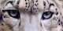

Click any leopard images to see the effect.
Image processing is a expensive calculation. The example demonstrate how Leopard improves the responsiveness to user ineraction.
With Leopard
Without Leopard
